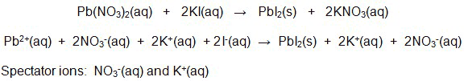
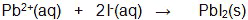
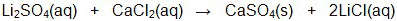
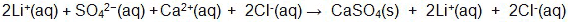
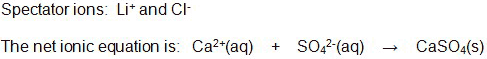
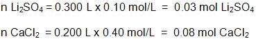
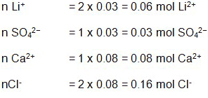
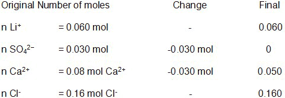
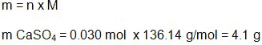
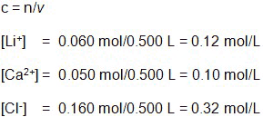

Unit 4: Solutions and Solubility
Activity 3: Reacting to a Solution
Content
Journal

|
As you are reading through this activity, keep track and take note of the bold-faced terms and their definitions. Include your own understanding of these terms in your notes. Also, pay close attention to the solutions to any special types of reactions and stoichiometry problems having to do with solutions. You will need your calculator. Please note that your teacher may require you to submit your journal at a later date. |
|---|
Precipitation Reactions

|
Watch the videoclip Lead Iodide Tornado. Please be aware, that, depending on your Internet connection speed, all clips on this page may take a few minutes to download. You can always continue reading the remainder of this page while you wait. |
|---|
 Questions
Questions
- After watching the videoclip, Lead Iodide Tornado, show the balanced chemical equation when a solution of lead (II) nitrate reacts with a solution of potassium iodide.
 Answer
Answer - Examine the two states of the two products and compare their solubility in water.Answer
- The reactant solutions contained ionic compounds. Show a dissociation reaction for Pb(NO3)2 and KI when their respective solids are dissolved in an aqueous medium to produce their solutions.Answer
- The starting aqueous solutions contained ions. List them.Answer
- Show the reaction between the ions that produce the insoluble lead (II) iodide, PbI2.Answer
- In the end, which ions reacted with each when the two solutions mixed together?Answer
- Which ions were in the solution, but did not react with each other?Answer
Whenever two solutions mix together and there is a formation of a precipitate, there will be ions which produce the precipitate and ions which do not react. The ions that do not react, in a precipitation reaction, are called spectator ions. A net ionic equation can be determined by recognizing the ions producing the precipitate.
 Example
Example
Show the spectator ions and the net ionic equation of the reaction between the solutions of lead (II) nitrate and potassium iodide
 Sample Solution
Sample Solution

(Notice that the spectator ions are found on the reactant and product side of the equation.)
The net ionic equation is: 
Solubility rules are important guidelines that allow you to determine the formation of a precipitate. Insoluble compounds will produce a precipitate in an aqueous medium. Take a look at the solubility rules for ionic compounds.
The two solutions that are mixing do not tell the whole story. These prepared solutions contain predetermined concentrations. With known concentrations and volumes, a stoichiometric relationship is established when they mix and react together. The mass of the precipitate and the concentrations of the ions can be determined in these precipitation reactions.
Example
A 300 mL solution of 0.10 mol/L Li2SO4 is mixed with 200 mL solution of
0.40 mol/L solution of CaCl2.
Determine the:
a) spectator ions and the net ionic equation for this reaction;
b) mass of the precipitate and
c) molar concentrations of the ions.
Sample Solution
(Start with showing the overall balanced chemical reaction and use the solubility rules to determine the precipitate.)

(Show a balanced chemical reaction consisting of the dissociated ions and the precipitate.)


(Determine the moles of the reacting compounds.)

(Determine the moles of the starting ions by multiplying the molar ratio of the ion in its compound to the starting moles of the compound.)

(Determine the limiting reagent that affects the mass of the precipitate by examining the calculated mole values of the aqueous ions.)
The limiting reagent is the sulphate ion, SO42-
(The final number of moles of the reacting aqueous ions can be determined by subtracting their starting moles with any moles that react to make the precipitate.
Note: The number of moles of the aqueous spectator ions will not change because they do not produce a precipitate.)

(Calculate mass of the precipitate.)

(Calculate the molar concentrations of the remaining ions in the solution. Note: The total volume of the solution is 500 mL.) A common practice to show molar concentration is using square brackets, [ ], around the symbols.

This is a disclaimer. External Resources will open in a new window. Not responsible for external content.
Unless otherwise indicated, all images in this Activity are from the public domain or are © clipart.com or Microsoft clipart and are used with permission.